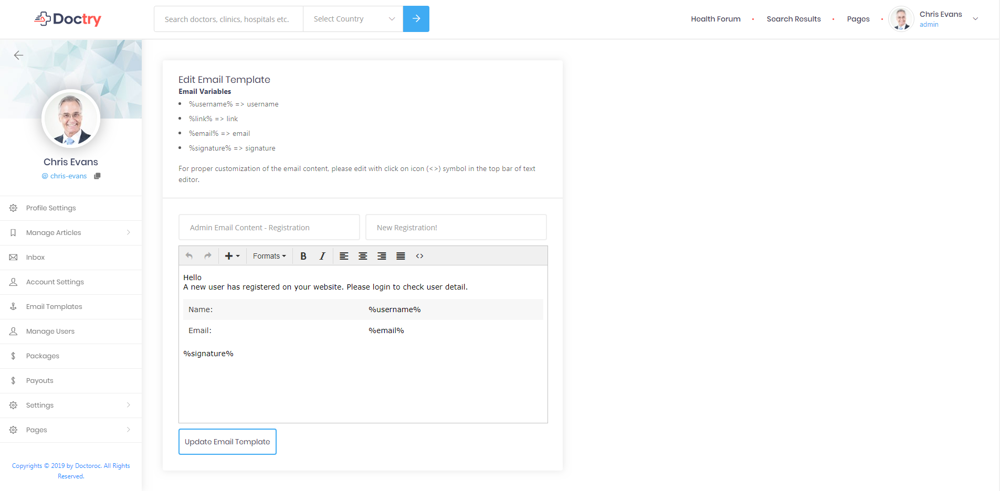
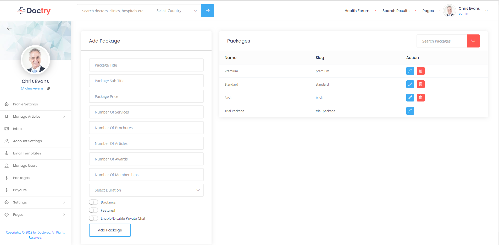
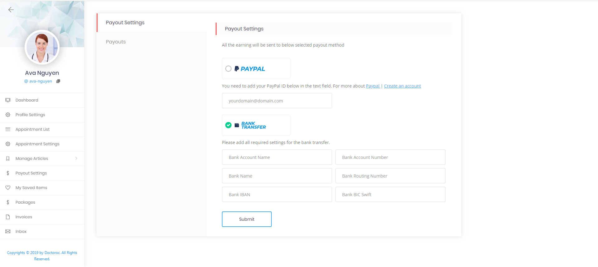
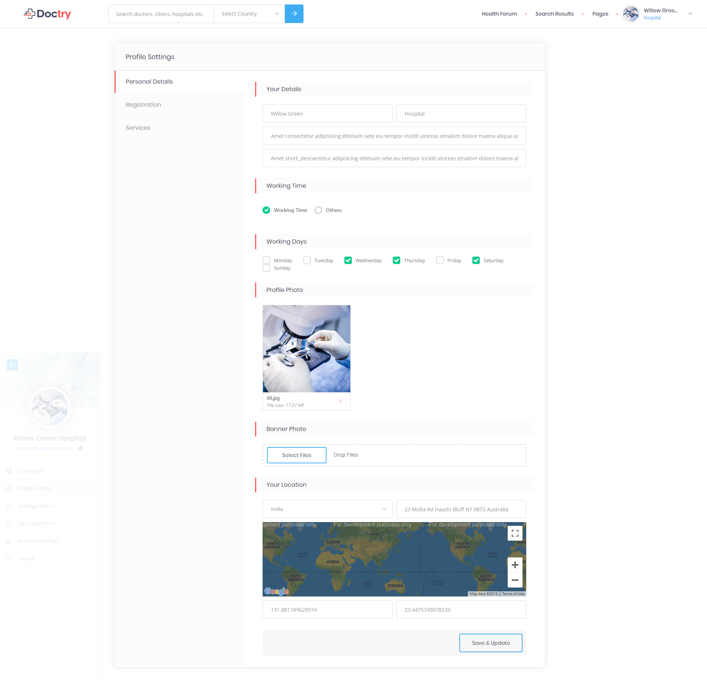

Thank you for purchasing our script. If you have any questions that are beyond the
scope of this help file, please feel free to email via my user page contact form here.
Thanks so much!
Doctry is a platform where patient search doctors or hospitals and book online appointment for a specific speciality or service in a available time slot.
Installation of the laravel application on the Server whether it is on dedicated or shared server
is an easy thing to do.
You just have to follow the points given below and your application will be deployed on the server.
This method assume that you have either cPanel and FTP details or both.
Login to your CPanel account. And First Create the database for your site.
Now go to File Manager in cPanel.
Now go to public_html or WWW or home (dependents on servers variety).
Now create a new folder inside public_html folder as shown in figure
upload your all laravel project files in the folder you have created. Zip your project and then
upload. In my case i have created an your_project folder ( this is a example name you can name it as you required )
( this step is optional you can upload and extract your project files in public_html )
Extract your Laravel Project. Now open the public folder.
Inside public folder select all items and move them to one step back means on your project directory root
location.
Now edit the index.php file. As shown in figure Now Change
the paths. As shown in figure
Save your index file.
If you follow the above steps correctly then know all your project files placed in the same folder
Installation with Installer / One click installation - top
After setting up your project folders, go to your project package folder open ENV file set the following configuration settings.
APP_NAME : your application name
APP_URL: your application url
DB_DATABASE: your database name
DB_USERNAME: your database user_name
DB_PASSWORD: your database password
MAIL_HOST: Your mail server host
MAIL_PORT: Your mail server port
MAIL_USERNAME: Your email id
MAIL_PASSWORD: your email password
MAIL_ENCRYPTION: If your MAIL_PORT=587 then MAIL_ENCRYPTION must be tls and if your MAIL_PORT=465 then it must be ssl
Important Note:
After saving configuration settings copy ENV file and paste it into project root directory.
Type your-project-path/ e.g (www.test.com) into your address-bar and follow the installation steps.
When all the process is successfully completed you will see a window indicating application successfully installed Just click finish and your application will be installed successfully.
Important Note:
If you have any issue regarding installation of application on live server you need to clear your cache as described in Clear Cache Manually..
Delete "installed" file from storage folder (root_path/storage/) if exist.
Installation of the laravel application on the local server is an easy thing to do.
You just have to follow the points given below and your application will be set on your system.
This method assume that you have the apache server either Xampp or Wamp installed in you system. if not you can
download there latest version from the given links
Xampp download and Wamp download
After setup apache server you need to copy project folder in the following folder.
If you install Xampp the folder location is installed_directory/xampp/htdocs/your_project_folder
If you install Wamp the folder location is installed_directory/wamp/www/your_project_folder
You need to install the composer. you can download it from here
After installation of the composer go to your project folder open "cmd" or "command prompt". you can open cmd by
pressing "shift + right click" and click "open command window here" e.g C:\xampp\htdocs\you_projecr_name
Run the following commands only at the time of installation
composer update
Your project is setup and ready to run. In order to run the project type the following command in the command
prompt
You can view created article listing as well as you can create new article
Create Article: You can featured your article from top right switch button and you can add title, description, featured image and select category. You need to create article category from taxonomy section
Inbox
Inbox is a real time chat system but in order to active real time chat in your application you need to set chat settings from general settings and run server.js file from your server
User can view all the users list he already chat with in left site and by clicking user image and name from left side list user can view chat history and send new messages
Email templates - top
You can find all email templates list in this page, you can filter email templates by user type from 'filter by role' dropdown and also you can search from search email template field. You can edit email template title, subject and description, you can find email variables which you can use in your templates. You can not delete email template.

You can find all registered users. You can delete any user by clicking delete icon and you can view user profile by clicking eye icon
Account Settings - top
Account settings consist of 2 parts reset password and email notification. In reset password tab you can change your password and In email notification tab you can view your email address on which mails will be delivered.
Profile Settings - top
In profile settings you can add your first name, last name, email, profile photo and banner photo.
Packages - top
You can view all created packages and also you can create new package.You can edit package by clicking pencil icon and you can delete package by clicking trash icon. You can not delete trail package.In order to create new package you need to add title, subtitle, package price, number of services user can add, number of brochers user you can add. number of articles user can published, number of awards user can add, number of memberships, package duration, has booking featured, and you can enable or disable chat feature from package.

Payouts - top
Doctry is based on Wallet System, in which admin transfers amount manually. Payouts is a doctors earning from appointment bookings, doctors can set their payout settings from their dashboard.

Admin can set a minimum payout amount that a doctor account should contain to withdraw their earnings. At every end of the month CronJob executes automatically that checks all the doctors's appointments and if the sum of a doctors's completed appointment amount is equal to or greater than minimum payout amount set by the admin then earing will be transferred to doctor wallet or payouts and then admin will manually transfer their earnings by using doctor's payout detail.You can download payout pdf file for specific year and month.
Homepage settings consist of 8 parts slider, search banner, service, about us, how it works, download app and doctor slider.
Slider Settings: You can add slider background image and you can add new slides by clicking add new button then a new form added in your settings then click on pencil icon and add slide data. You can delete slides by clicking delete icon.
Search Banner Section: You can show or hide search form from hope page and you can add title, heading, subheading, button title, button url and search banner image.
Service Section: You can show or hide service section from hope page. You can add multiple service tab by clicking plus icon and delete tab by clicking delete icon.
About Us Section: You can show or hide about us section from hope page. You can add title, subheading, description, button title and url, about us right side image and title and subtitle.
How It Works Section: You can show or hide how it work description section from hope page. You can add title, subtitle and description for how it work description section. You can show or hide how it work image tabs. You can add multiple image tab by clicking plus icon and you can delete by clicking delete icon.
Download App Section: You can show or hide download app section from hope page. You can add title, subheading, description, section background image android app image and url and iso image and url if you leave url field empty then image not displayed in homepage.
Doctor Slider Section: You can show or hide doctor slider from homepage. You need to select specialty and the doctors related to that specialty start displaying in doctor slider.
Article Section: You can show or hide article section from homepage. You can add title, subheading and description.
You can manage all settings related to doctry application. General settings consist of 14 parts general, email, registration, top-bar, inner-page, social, dashboard, footer, role, sidebar, clear cache, demo content and chat settings
General Setting: You can upload header logo and favi-icon. In order to display map you need to add your Google map API key. You can change application language, you need to check Translate Languages section for translating and adding new languages. You can enable and disable chat from doctor profile page. you can control application color settings.
Email Setting: You can add from email address, from email name, sender name, tag-line and url, you can upload logo, banner and sender image.
Payment Setting: payment settings consist of 3 parts General settings, PayPal, and Stripe.
Payment General setting: you can change application currency. Doctry support two types of payment method PayPal and Stripe you can either select both or one of the payment method. You need to set minimum payout or amount which can be withdrawal by doctor. If doctor amount will be the smaller then your set minimum amount then their payouts will not be generated.
PayPal Settings: In order to use PayPal you need to add your credentials if you want to use sandbox account for testing you need to enable sandbox from setting.
Stripe Settings: In order to use stripe you need to add your key and secret from your stripe account.
Registration Form Setting: You can manage registration form steps. You can change all steps title, description, link and upload image.
Top bar Setting: You can enable or disable top bar. You can add phone title, phone number and enable or disable social icons.
Inner Page Setting: You can enable or disable breadcrumbs and search form. Breadcrumbs and Search form settings can be applied on all pages you have created from admin dashboard, search pages, profile pages and article pages. You can add SEO meta title and description for search result page.
Social Setting: You can add and remove social icons for doctry application.
Dashboard Icons: You can upload user dashboard icons.
Footer Settings: You can show or hide contact information bar. You can add contact information bar phone number, email and upload images. You can upload logo, add about us description, address, email, phone, copyright text and enable or disable social icons.
Role Settings: Doctry consist of 4 types of roles you can change their display names.
Sidebar Settings: You can show or hide sidebar from inner pages. Sidebar consist of 3 parts Ask query, Mobile app and ads.
Ask query: You can show or hide this section from sidebar. You can add title, description, button title and link, and upload image.
App section: You can show or hide this section from sidebar. You can add title, description, button title, app link and upload image. User or visitor add his email in email field from sidebar and your app link is send to the user email.
Add section: You can show or hide this section from sidebar. You can add your add code by clicking <> icon.
Clear Cache: After changing in css or javascript code or in .env configuration file you need to clear you application cache in order to take effect your changing. You can clear specific cache of the application by clicking clear cache button and you clear all application cache by clicking clear all button.
You can also clear cache manually by following the steps given below
Go to project root folder
Open bootstrap folder
Open cache folder
Delete all files inside the cache folder
Demo Content: You can import demo content by clicking "Import Demo" and you can remove demo content by clicking "Remove Demo" from admin dashboard as shown in below image.
Chat Settings: In order to enable real time chat in Doctry you need to configure host and port settings.
Host could be either http://localhost or could be http://yourdomain.com. You need to add the available port for chat, default would be 3001 Some server uses 80, 81, 8080, 3000, 3001, consult with your hosting provider no need to change the port if your server is using port 3001, if you will change this port then you have to change it in server.js file located in your-project > js > server.js at line no 3. Your node server should run server.js file for real-time chat. Please ask your hosting provider, how you can run this file.
You can view all created pages and you can add new page or edit already created page. In new page you can change slug, add title, description, seo meta description and hide or show from main menu.
User can be register as a doctor. After registration a trail package is assign to doctor, he or she can update his or her package from their dashboard. In order to work as a doctor user need to add appointment location in a hospital.
Doctor profile consist of 5 parts personal detail, experience and education, awards and downloads, registration and services.
Personal Detail: Doctor can change his/her title, add subheading, first name, last name, starting price, description, upload profile image and banner, select location, add address, longitude and latitude and can remove and add memberships respective to his/her package.
Experience and Education: Doctor can add his/her experience or education, by clicking add new a form added and then his/her need to click pencil icon to add education or experience detail. Doctor can delete experience or education by clicking delete icon.
Awards and Downloads: Doctor can add award by adding title and date. he/her can delete award by clicking delete icon. Doctor can upload files. Doctor can add award and upload files respective to his/her package.
Registration: Doctor can add his/her medical registration number and upload medical document.
Services: Doctor can add services in his/her relevant specialization. Doctor can add services respective his/her package.
Doctor can view his/her appointments. Doctor need to select date from calender and all the appointments related to the selected date can be displayed. Doctor can view patient detail by clicking view detail button.
In order to start booking appointments you need to send request to hospital then hospital approve or reject your request. Doctor need to search hospital he/her want to send request to add, then for creating time slot select start time then select duration you spend to check patient then select interval between slots then number of slots doctor want to create and your end time automatically generate by calculating your precious settings. Then doctor need to select his/her specialty and service for selected hospital and select space or number of patient he/her want to check in each slot. Then doctor need to select days he/she available in selected hospital and then doctor need to add his/her consultation fees.
New slots: Doctor can add new slots or days and delete slots or days. If you doctor to add new slots or days then click view detail button in available location and new page open with previous detail. For adding new slots open day in which you want to add new slot click add more button and new slot form added add slot detail and save. If you want to delete specific slot then click cross icon over time slot and if you want to delete all slots for a specific day then click delete all and slots deleted. If doctor want to add new day then he/she open day and add new slot and day added in his/her available day list. You can also update your services from this page.
You can view created article listing as well as you can create new article
Create Article: You can featured your article from top right switch button and you can add title, description, featured image and select category. You need to create article category from taxonomy section
Doctor need to set his/her payouts in order to withdraw his/her amount. Doctor can select PayPal or Bank Transfer payment method and add their relevant data. you can view more detail from here
Doctor can view all available packages list from this package. In order to purchase package click buy know button and then user redirect to the checkout page. In checkout page user need to select payment method from he/she want to pay.
User can view all of his/her invoices. In order to view detail click view button and new page open with user invoice detail. User can print his/her invoice form that page.
Account settings consist of 2 parts delete account and reset password. In delete account user you delete his/her account, user need to fill all form data and click delete account, after deleting user can automatically logout from the site and his/her data also deleted. an email is send to admin in case of user delete account. In reset password tab user you can change his/her password.
Hospital manage doctors team. doctor send request to hospital and then hospital accept or reject doctor request. below are the settings hospital need to configure.
Doctor profile consist of 5 parts personal detail, experience and education, awards and downloads, registration and services.
Personal Detail: user can change his/her subheading, first name, last name, description, working time, working days and upload profile image and banner, select location, add address, longitude and latitude.

Registration: user can add his/her medical registration number and upload medical document.
Services: user can add services in his/her relevant specialization.
Hospital need to accept or reject doctor request. Hospital can accept request by clicking approve user button and reject doctor request by clicking reject user. Hospital can also remove doctor from his team by clicking delete user button
Account settings consist of 2 parts delete account and reset password. In delete account user you delete his/her account, user need to fill all form data and click delete account, after deleting user can automatically logout from the site and his/her data also deleted. an email is send to admin in case of user delete account. In reset password tab user you can change his/her password.
User can view his/her appointments. User need to select date from calender and all the appointments related to the selected date can be displayed. User can view doctor detail by clicking view detail button.
User can view all of his/her invoices. In order to view detail click view button and new page open with his invoice detail. User can print his/her invoice form that page.
User can view all the users list he already chat with in left site and by clicking user image and name from left side list user can view chat history and send new messages
Account settings consist of 2 parts delete account and reset password. In delete account user you delete his/her account, user need to fill all form data and click delete account, after deleting user can automatically logout from the site and his/her data also deleted. an email is send to admin in case of user delete account. In reset password tab user you can change his/her password.
Translation of strings is termed as localization in laravel official documention.
You can change language according to your need in Doctry by following the steps given below.
Go to project main folder you will find "resources" folder e.g Doctry > resources
There you will find a folder named "lang"
In which there are language folders like "en", "de" etc.
Create your language folder with its code name e.g "en", "de" etc.
Copy all the files from "en" folder and paste it in your folder that you want your application to be translated in.
All files contain the translated strings of the whole application. You have to translate all files manually.
Go to project main folder (root) -> app folder -> Helper.php
Open Helper.php find (getTranslatedLang) function add your created language in list e.g 'fr' => array(
'code' => 'fr',
'title' => 'French',
),
Go to Admin Dashboard -> General Settings you will find "Language Settings" option if you do previous step correctly you will find your language in the dropdown as shown in image below.
select your language and click save.
If language not change then go to Admin Dashboard -> General Settings > Cache clear and clear all the cache from there as shown in below image.
For more information regrading translation in laravel you can consult its documention Laravel Localization
Translate Language On Local Server
If you are having problem translating languages on local server please follow the steps given below
Now stop your artisan server
Go to project root folder
Open bootstrap folder
Open cache folder
Delete all files inside the cache folder
Now start your artisan server again and refresh you site on local server.